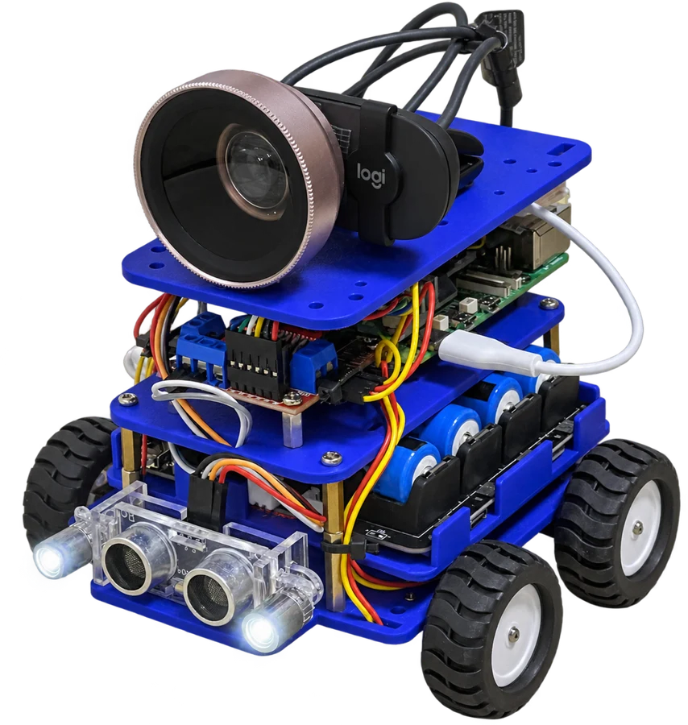
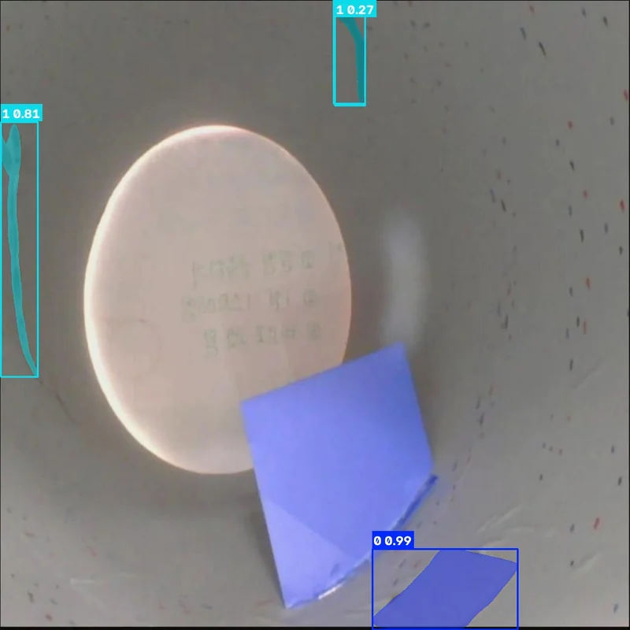

지반침하 이력 · 관로 노후도 · 강수량 같은 공공데이터로 전국 시군구의 점검 우선순위를 매기고, 소형 로봇이 관로 모형 안을 주행하며 결함을 찾아 웹 대시보드에 실시간으로 보여 주는 시스템. 점검 뒤에는 보고서와 관로 내부 3D 복원 제공.
6명 중 결함 탐지 모델의 데이터와 학습, 관로 3D 복원과 웹 뷰어 담당. 공개 하수관 CCTV 데이터 변환 · 분할과 SAM 2.1 의사 마스크, 모형 관로 데이터로 학습한 세그멘테이션 모델, 3D Gaussian Splatting 학습부터 브라우저 뷰어까지 진행함.
0.91모형 관로 mask mAP50 (YOLO26n-seg · 검증 29장)
146장모형 관로 세그멘테이션 데이터
우수상SSAFY 공통 프로젝트
로봇 · 시연

점검 로봇 (팀 제작)
제어 - Raspberry Pi 5 · L298N 모터 드라이버, 명령 TTL · 통신 단절 시 자동 정지
카메라 - 광각 렌즈를 단 웹캠 · LED 조명, 관로 내부 영상과 결함 탐지 입력
센서 - 초음파(HC-SR04) 정면 거리 · IMU(MPU6050) 자세
내 역할 - 이 카메라 영상으로 결함 탐지 모델 학습과 관로 3D 복원
시연 영상 (3분 36초): 대시보드의 실시간 관로 카메라 · 결함 통계와 모형 관로를 주행하는 로봇
학습 데이터
데이터
내용
공개 하수관 CCTV
관로 내부 이미지 2,000장 · 결함 표시 2,868개 (COCO 형식, 640×360). 학습 1,600 · 검증 200 · 테스트 200장으로 8:1:1 분할
모형 관로
로봇 카메라로 찍은 모형 관로 프레임 146장 · 균열(defect) · 표면 손상(damage) 2개 클래스, 학습 102 · 검증 29 · 테스트 15장
공개 CCTV 데이터 클래스별 표시 수
균열 (CL)
2,827
기타 (EX)
41
결함 표시의 98.6%가 종방향 균열(CL) 한 클래스. 이 데이터에는 박스(bbox)만 있고 세그멘테이션 마스크가 없어 SAM 2.1로 의사 마스크를 만들어 사용함.
탐지 모델 결과
데이터
모델
검증 지표
공개 CCTV (검증 200장)
YOLO11n 탐지
mAP50 0.32
공개 CCTV (검증 200장)
YOLO11n-seg (SAM 2.1 의사 마스크)
mask mAP50 0.26
모형 관로 (검증 29장)
YOLO11n-seg
mask mAP50 0.94
모형 관로 (검증 29장)
YOLO26n-seg
mask mAP50 0.91
모형 관로 (테스트 15장)
YOLO26n-seg
mask mAP50 0.98 · mAP50-95 0.89

모형 관로 추론: 균열(하늘색) · 표면 손상(파란색) 마스크
공개 CCTV 모델 - 정밀도는 0.84로 높지만 재현율이 0.31로 낮아 균열 대부분을 놓침
모형 관로 모델 - 시연 환경과 같은 장면으로 학습해 mask mAP50 0.91 달성
서비스 연동 - 로봇 AI 에이전트가 같은 이름의 YOLO26n-seg 가중치와 클래스(defect · damage)를 불러와 실시간 탐지에 사용(연동은 팀원)
모형 관로 146장은 영상 한 개에서 뽑은 프레임을 무작위로 나눈 것이라, 평가 프레임의 바로 앞뒤 프레임이 학습에 들어 있음. 그래서 검증 · 테스트 수치는 실제보다 높게 나온 값이고, 실제 하수관 성능도 아님.
3D 복원
점검이 끝나면 흔들리는 주행 영상만 남는 문제를 줄이기 위해, 촬영 영상으로 관로 내부를 3D로 복원해 브라우저에서 돌려 볼 수 있게 함.
1,404장4,210프레임 중 3프레임마다 가장 선명한 장면 선택
27.3 dBPSNR · SSIM 0.917 (학습에서 뺀 8장마다 1장 기준)
22만 개가우시안 수 · 렌더 약 0.006초/프레임
프레임 선택 - 주행 영상 4,210프레임을 3장씩 묶어 가장 선명한 1장만 남겨 1,404장으로 축소
카메라 포즈 - COLMAP 연속 매칭으로 1,404장 모두의 촬영 위치를 역추적하고 희소 점군으로 초기화
3DGS 학습 - gsplat 라이브러리로 위치 · 크기 · 색 · 투명도를 가진 가우시안 수십만 개를 실제 사진과 같아질 때까지 최적화(L1 + SSIM 손실), 오차가 큰 곳은 가우시안을 쪼개고 불필요한 것은 제거
웹 뷰어 - 학습 결과 PLY를 GaussianSplats3D의 ksplat 형식으로 바꾸는 변환 스크립트를 만들고, React 대시보드에 3D 뷰어 화면 추가
배포 - 씬 파일을 재구성본(p5_w3)으로 교체할 때 이름까지 바꿔 브라우저가 예전 씬을 캐시에서 띄우지 않게 처리
대시보드 3D 뷰어에서 복원한 관로 내부를 돌려 보는 화면
담당 기술
영역
사용 기술
데이터 처리
Python · COCO / YOLO 형식 변환 · EDA · 8:1:1 분할
비전 모델
Ultralytics YOLO11n · YOLO11n-seg · YOLO26n-seg · SAM 2.1
3D 복원
COLMAP · gsplat(3D Gaussian Splatting) · PyTorch · CUDA